¿No te gustan los Pines que ves?
Seguir nuevos intereses
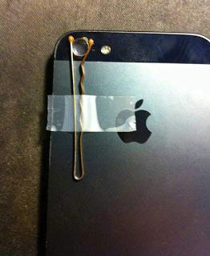
Amazing way to take incredible pictures | Mind blowing Things
3
2
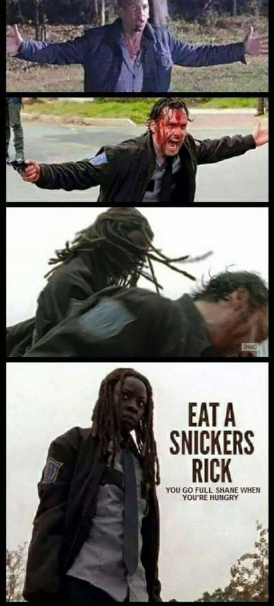
Walking Dead Season 5 memes do so much with so little (38 photos)
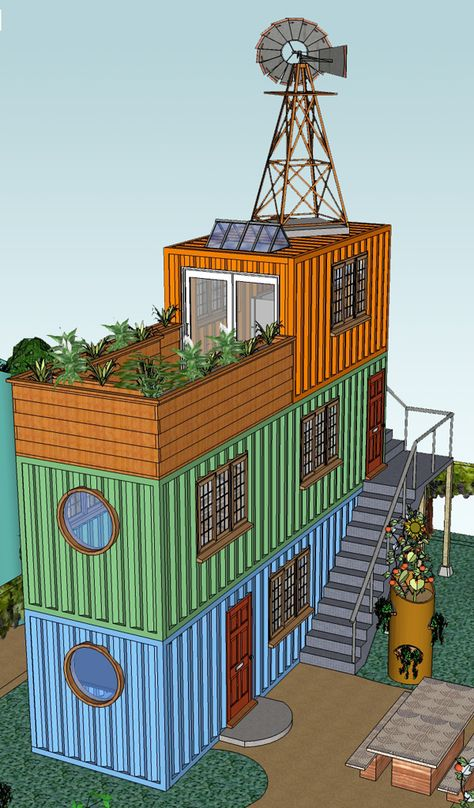
Shipping Container -- I could totally see living on the bottom, kids on middle floor and adults on the top with balcomy...
Idunsgate Apartment by Haptic Architects
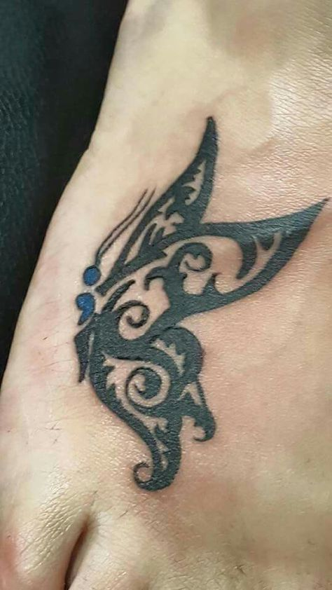
Semicolon butterfly tattoo
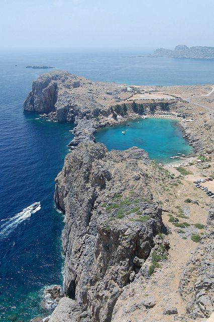
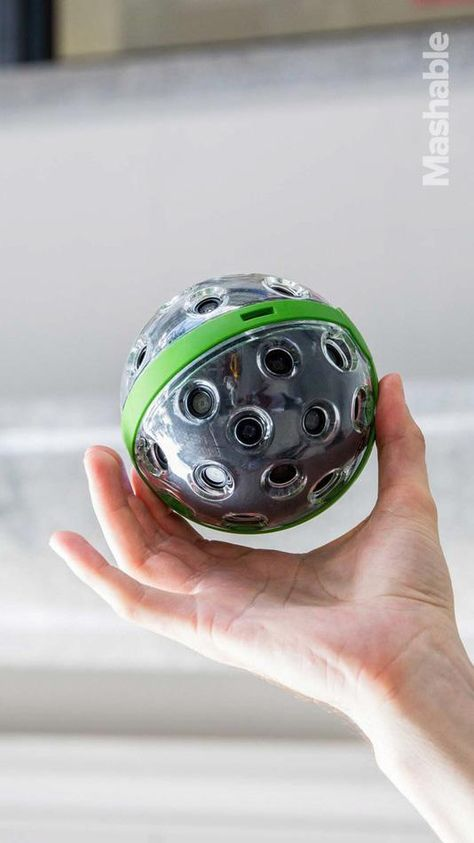
The Panono camera is a ball that captures spherical photos. It also happens to be the highest-resolution consumer camera you can buy
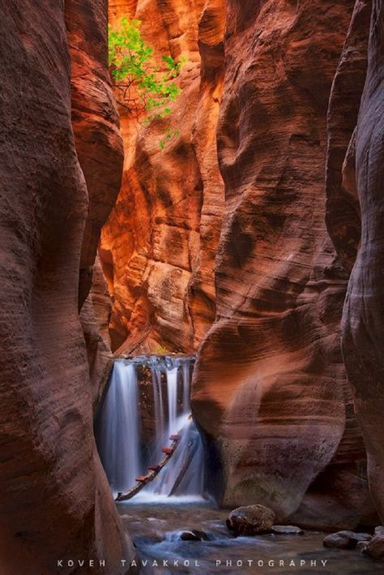
Kanarra Falls - Zion National Park, Utah
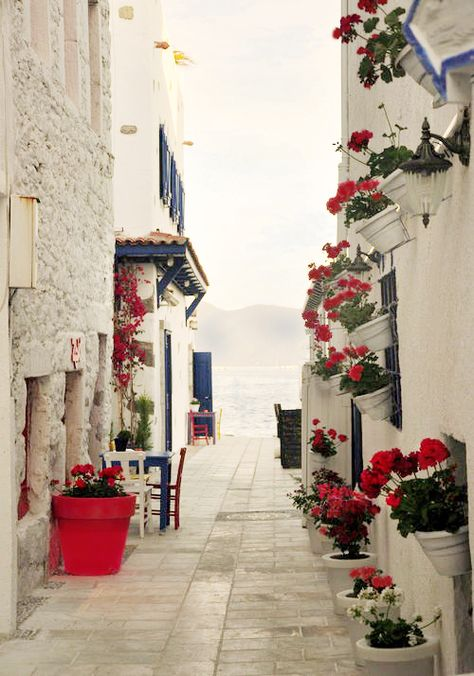
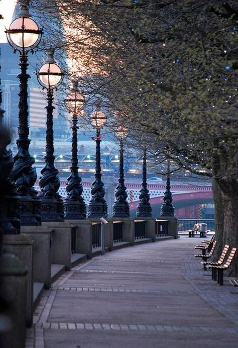
Queens Walk, London, England
35
6
25 Outstanding Logo Desings | From up North
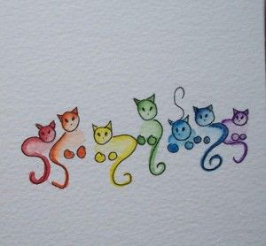
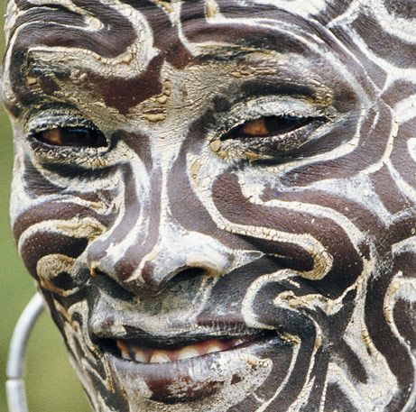
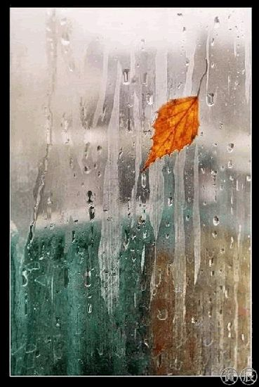
saba-days-comments--animacje--Bmans--General-Pics----natura--good-day--mix--gif--different-animated-films--gifs--PAUL-MCQUEEN-ALBUM--0001_la.gif Photo: ...
4
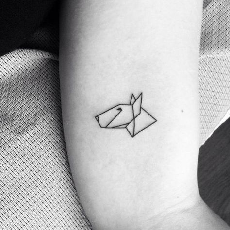
A imperfeiçao descolada nas tatuagens de Fontelijuice